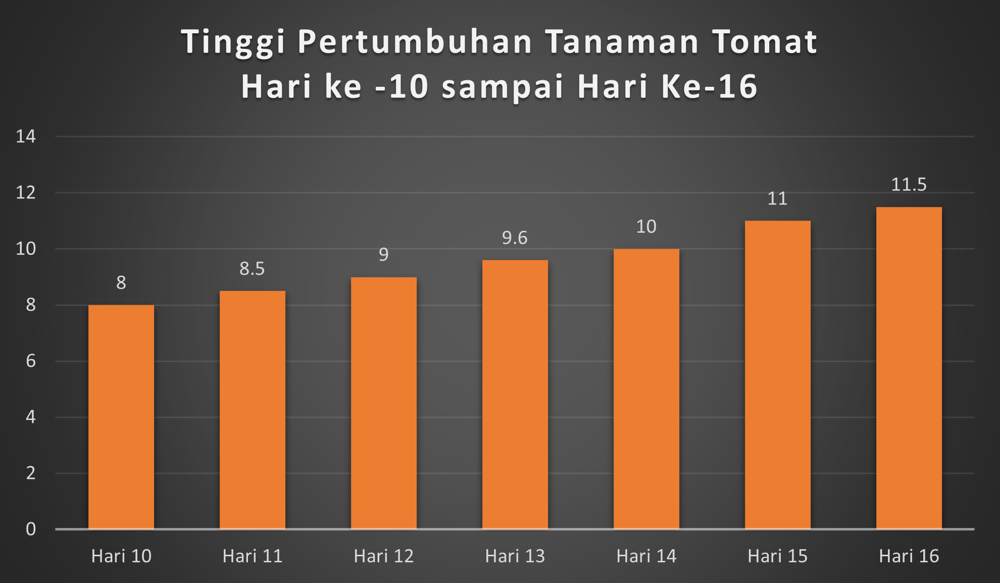
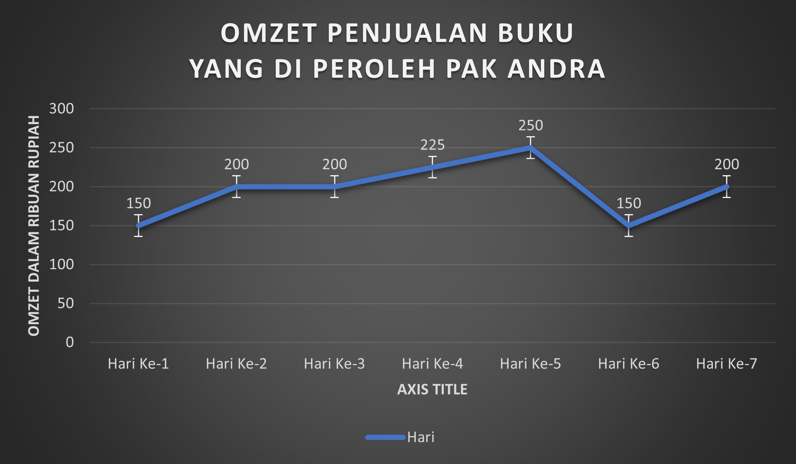
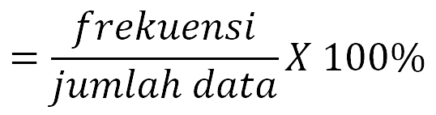
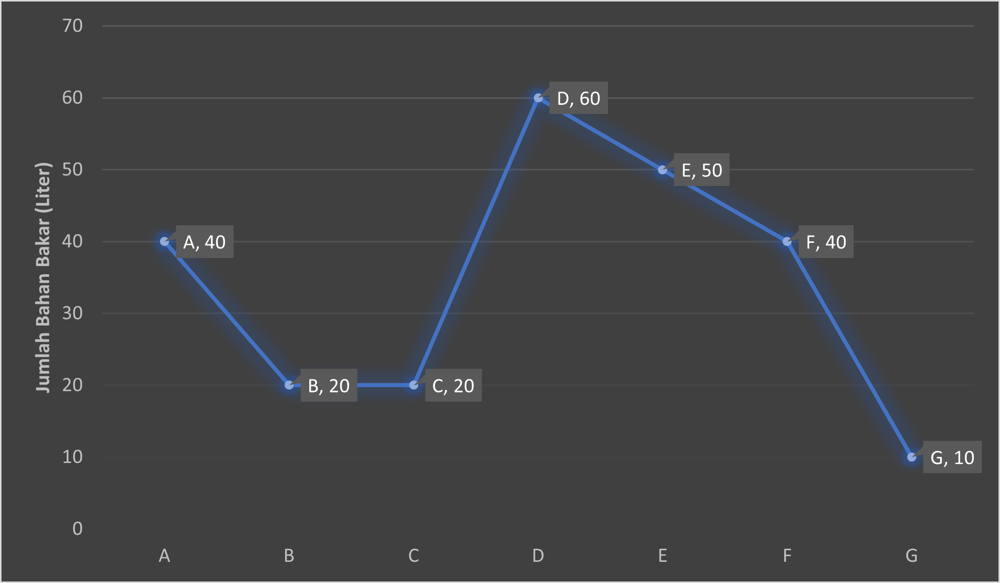
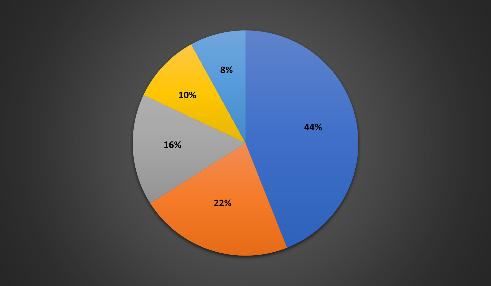

1. Apa yang kamu dapatkan dalam vidio tersebut ?
2. Bagaimana kita menyajikan data pertumbuhan tomat tersebut agar lebih mudah dibaca atau dipahami ?
Perlu kalian ketahui bahwa ada beberapa macam penyajian data dalam bentuk diagram yaitu diagram batang, diagram garis, dan diagram lingkarang. Apa itu ? Dan bagaimana perbedaan nya ? Mari kita bahas bersama !
Diagram batang biasanya digunakan untuk menggambarkan perkembangan nilai suatu objek dalam kurun waktu tertentu.
Berdasarkan vidio yang telah kalian amati, berikut adalah gambar diagram batang mengenai pertumbuhan tanaman tomat pada hari ke - 10 sampai hari ke - 16
Diagram di atas menunjukkan bahwa pada hari ke-10 tinggi tanaman tomat adalah 8 cm, pada hari ke-11 adalah 8,5 cm, dan seterusnya.
Temukan juga keterangan-keterangan lain yang dapat kalian peroleh dari diagram batang di atas.
Cm
Setelah mengamati, buatlah minimal satu pertanyaan yang dapat kamu ajukan !
Misalnya : Bagaimana cara kita menyajikan dan menafsirkan data ?
Pertanyaan 1
Pertanyaan 2
Pertanyaan 3
Diagram garis biasanya digunakan untuk menyajikan data dalam waktu berkala atau berkesinambungan.
Akhir-akhir ini penjualan toko buku di toko Pak Andra sedang mengalami naik turun,biasanya pada tahun ajaran baru penjualan buku mengalami naik drastis , tetapi kali ini berbeda, menurut Pak Andra jumlah pembeli turun dikarenakan buku mulai tergantikan dengan teknologi dan gadget, dan penjualan akan naik ketika banyak mahasiswa yang mencari refrensi untuk skripsinya, itulah sebabnya penjulan buku ahir-ahir ini naik turun. Berikut adalah omzet penjualan buku yang di peroleh Pak Andra selama 7 hari dapat dilihat pada diagram garis di bawah ini !.
Diagram lingkaran biasanya digunakan untuk menyajikan data dalam bentuk persentase .
Diagram lingkaran di atas menunjukan data berat badan 60 siswa di SMP Argenta. Diketahui jumlah siswa yang memiliki berat badan 40 Kg sebanyak 6 siswa, 42 Kg sebanyak 15 siswa, 43 Kg Sebanyak 18 siswa, dan 44 Kg sebanyak 9 siswa. Hitunglah :
a. Berapa banyak siswa yang mempunyai berat badan 41 Kg ? Kemudian ubahlah dalam bentuk persen !
Diketahui bahwa,
berat badan 40 Kg = 6 siswa
Siswa
Siswa
Berat badan 44 Kg = 9 Siswa
Jika jumlah seluruh siswa sebanyak 60 siswa, maka banyak siswa yang mempunyai berat badan 41 Kg yaitu,
= 60 - (6+15+18+9) Siswa
Siswa
Siswa
Siswa
Mengubah dalam bentuk persen

= 12 X 100 %
%
%
b. Tunjukan besar sudut (dalam bentuk drajat) dari berat badan 44 Kg yang dimiliki oleh siswa !
Penyelesaian :
Siswa
Jadi, Rumus untuk diagram lingkaran dalam bentuk derajat adalah :
Besar Sudut
x360°
60
°
°
Grafik dibawah ini menyajikan penggunaan bahan bakar terhadap waktu (dalam jam) [pada perjalanan sebuah mobil darai kota M ke kota N. Gunakan informasi pada grafik di bawah ini untuk menjawab pertanyaan.
1. Berapa liter bahan bakar yang dihabiskan dalam perjalanan :
Liter
Liter
2. Coba perhatikan kembali grafik di atas secara baik.
Pilihlah salah satu jawaban (a,b,c atau d) dengan cara men-klik salah satu pilihan jawaban yang benar !
1. Urutan mobil-mobil tersebut berdasarkan benyak mobil yang terjual dilanjutkan dengan abjad nama mobil secara meningkat adalah ....
Tulis Jawaban kalian pada kolom yang sudah disediakan
Bacalah text berikut untuk menjawab pertanyaan nomor 3 dan 4 !
Tulis jawaban kalian pada kolom yang sudah disediakan ! (Tulis jawaban ahir saja berupa angka!).
Pasangkanlah pernyataan dan jawaban yang tersedia di bawah ini dengan memasukan kode Jawaban
CONTOH : (JAWABAN 1)
Bacalah Teks Berikut !
5. Restoran bintang lima dijalan Andra, Tanggerang kembali menghadirkan lima menu baru. Chef manager restoran bintang lima, Andika mengatakan, menu berupa Nasi Goreng Mexico, Spaghetti Black Pepper, Spaghetti Bolongnese, Chicken Biryani, dan Vegetable Samosa. Dalam satu minggu ini tercatat jumlah pengunjung yang mencoba menu baru bintang lima tersebut dalah 750 orang. Sepertinya pada diagram lingkaran di bawah ini.
Lima menu baru restoran bintang lima yang terjual adalah Nasi Goreng Mexico 44 %, Spaghetti Black Pepper 22 %, Spaghetti Bolongnese 16 %, Chicken Biryani 10 %, dan Vegetable Samosa 8%.
Pasangkanlah pernyataan dan jawaban yang tersedia di bawah ini dengan memasukan kode Jawaban CONTOH : (JAWABAN 1)
60 Orang
75 Orang
330 Orang